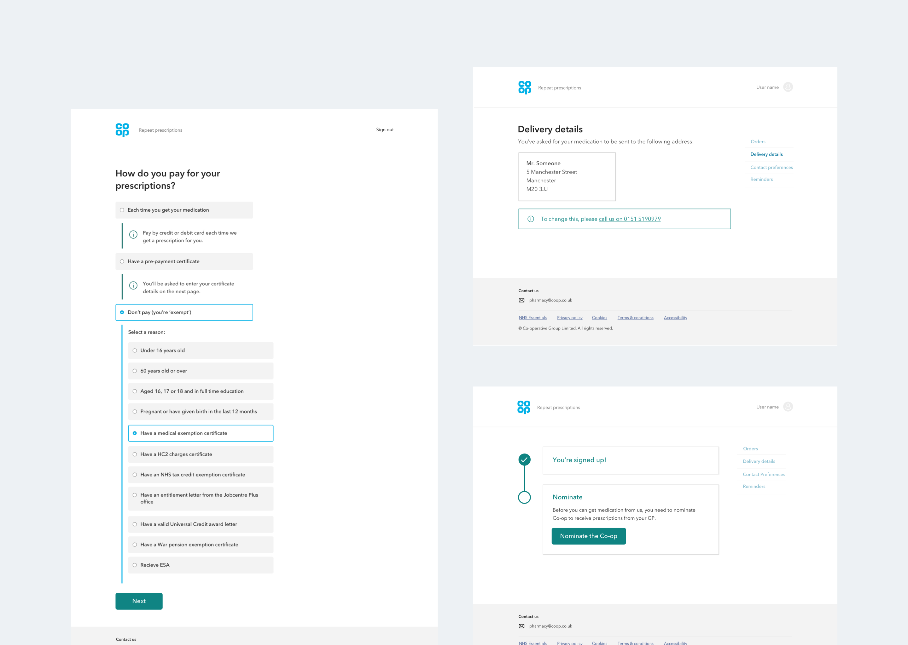
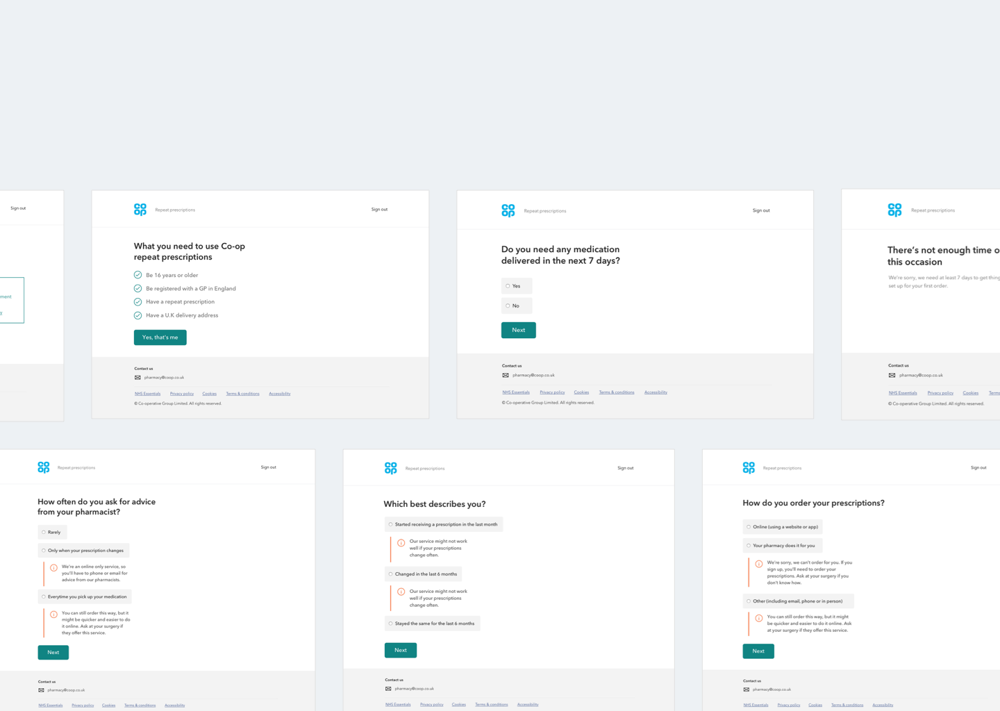
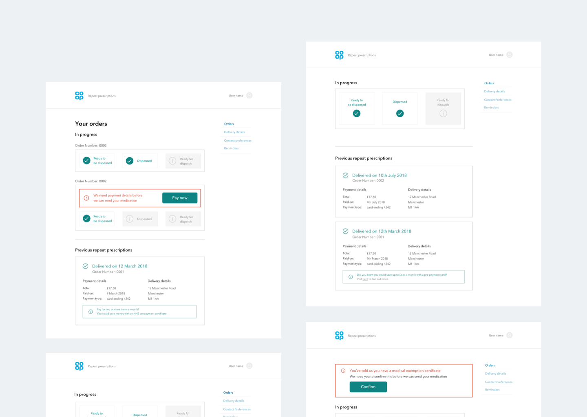

The Problem
Role
UI/UX Design, User Research, Service Design
Tools used:
Sketch, Overflow, Principle, Abstract, Figma
Research methods:
User journey mapping, user interviews, JTBD framework, How Might We's
Each year the NHS spends £8 billion on repeat prescriptions, it’s second biggest cost after staff
costs. But, £100 million of this is lost on unwanted or misordered medicine.
Our challenge was to
reduce the amount of pressure currently on the NHS, whilst also giving users more control over their
own health by building and testing an online repeat prescription service for UK customers in 16
weeks.

Research
When I joined the project, the Rx team had already been through an extensive 16-week discovery
phase, in which they documented a 'happy path' of the service. This service map helped to build a
shared understanding within the team, reduced the chances of working within silos and allowed us to
visually map pain-points. In an industry as complex as healthcare there are often many moving parts
and
rarely do they happen in tandem. This map was crucial in enabling us to see
where a pharmacy colleagues journey intercepts a users.
We used this large physical map to help tell the story of product - it was extremely useful in
engaging
key stakeholders and we ran regular sessions whereby we could interview experts and add their
knowledge to our
ever evolving document.
Along with our excellent user researchers, I helped run user interviews and usability sessions
every 2-weeks. These lasted an hour and we split into 30-mins of conversation/surveying and 30-mins
of
direct user testing with a prototype of the product in its current state. These 2-week sessions were
built
into sprint planning and formed a sort of 'north-star' for our sprint goals each week.
Clarity of service
One thing that quickly became apparent; in our current format, the alpha version of Co-op Rx
would only be able to serve a small portion of users. Due to various legal and time restraints, and
the
need for us to launch a proof of concept we couldn't provide a service for users who had complex
medical
needs, who lived outside of England or people who needed regular contact with their pharmacist.
With this in mind we created a 'clarity of service' questionnaire which the user would have to
complete before
being able to sign up. The goal was to filter out users who we couldn't currently offer the right
level of service to
, whilst providing them with advise on how they might be able to use our service in the future.

Keeping users up-to-date
One of the greatest pain points we found for users who currently get their prescription from
a traditional pharmacy is not knowing what the status of their order is. Common quotes were around,
"Where do I pick my prescription up from?", "How long do I have to wait to "
Our alpha phase solution was to build a logged-in dashboard which would provide real-time updates
to the user about where in the process their order was. They would also be able to modify aspects of
their account, check the status of previous orders as well as track their current order.
We paired this with matching service emails to give further clarity to the user. During testing we
found
a pretty much 50/50 split between those who would prefer email and those who would log-in and check
the status.
Interestingly, almost everybody said they would prefer all of this to be within an app. There is a
perception that having an app would make the whole process 'easier and more personalable'.
Update: The Co-op recently launched an app version of our alpha project. You can read more about that
here

 Back to top
Back to top